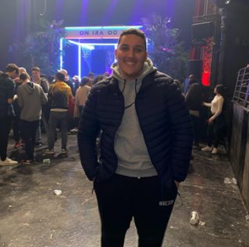

Page d'acceuil
Bonjour
je m'appelle Nizar Rhannoumi
j'ai 19 ans

J'étudie au Lycée Parc de Vilgénis à Massy .Je suis en première année de BTS SIO (Services informatiques aux Organisations).
J'ai obtenu un Baccalauréat Professionnel SN option RISC (système numérique option C Réseaux informatiques et systèmes communicants) metion Assez-Bien.
Vous pouvez télécharger mon cv dans le menu CV.
Vous pouvez télécharger tous les PDF qui peuvent vous être utile dans le menu PDF.
Et vous pourrez retrouver mes informations personnelles dans la rubrique Contact.